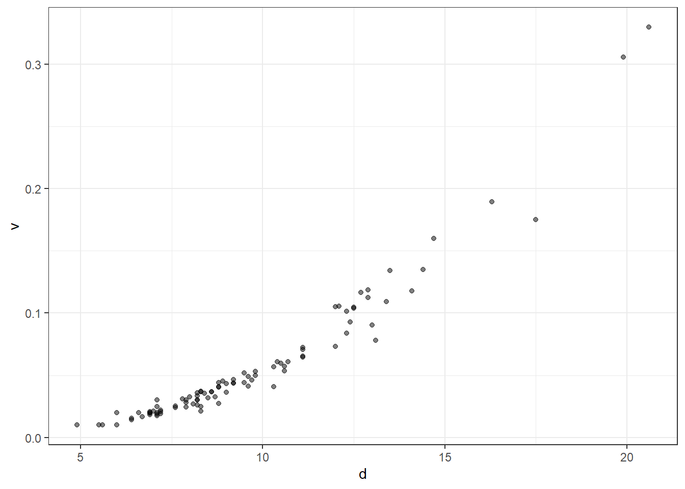
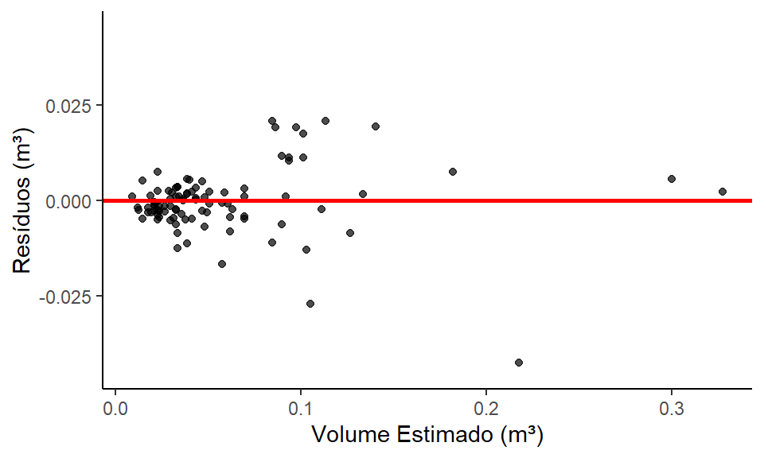

Visualização de Dados Florestais no R
library(ggplot2)
library(ggcorrplot)
library(ggthemes)
library(gridExtra)
library(MASS)
library(ggalt)## Registered S3 methods overwritten by 'ggalt':
## method from
## grid.draw.absoluteGrob ggplot2
## grobHeight.absoluteGrob ggplot2
## grobWidth.absoluteGrob ggplot2
## grobX.absoluteGrob ggplot2
## grobY.absoluteGrob ggplot2dados.brutos <- read.csv2("data/dados.csv",
header = TRUE,
sep = ";",
dec = ",")
str(dados.brutos)## 'data.frame': 100 obs. of 15 variables:
## $ ua : int 24 149 89 114 5 35 105 138 93 117 ...
## $ projeto: chr "Campo Alto" "Campina" "Campina" "Lageadinho" ...
## $ npragas: int 2 0 2 4 0 3 0 4 1 3 ...
## $ idade : num 12 7.6 8.5 4.5 10 5.5 4.5 4 6.5 5.5 ...
## $ nha : int 1444 2246 1900 3600 1050 1593 2800 4185 2800 2700 ...
## $ vha : num 134 65.9 77 49.1 77 ...
## $ gha : num 18.96 11.81 12.67 8.29 13.14 ...
## $ d : num 12.4 7.9 8.8 8.6 12 7.6 8.8 6 8.2 8.7 ...
## $ h : num 13.7 10.5 11.7 11.6 11.3 ...
## $ v : num 0.0927 0.03 0.0405 0.0369 0.0733 0.0254 0.0274 0.01 0.0302 0.0327 ...
## $ g : num 0.013 0.01 0.007 0.006 0.013 0.005 0.007 0 0.006 0.006 ...
## $ dg : num 12.9 8.2 9.2 8.9 12.6 7.8 9.2 6.4 8.5 8.9 ...
## $ hdom : num 15.6 12.6 13 13 12.6 ...
## $ sitio : int 12 12 12 14 10 12 10 14 12 10 ...
## $ classe : chr "Classe II" "Classe II" "Classe II" "Classe I" ...# View(dados.brutos)
ggplot(dados.brutos, aes(d,v)) + geom_point()## Warning: Removed 6 rows containing missing values (geom_point).
# Removendo as linhas com valores ausentes
dados <- subset(dados.brutos,!is.na(dados.brutos$d))
str(dados)## 'data.frame': 94 obs. of 15 variables:
## $ ua : int 24 149 89 114 5 35 105 138 93 117 ...
## $ projeto: chr "Campo Alto" "Campina" "Campina" "Lageadinho" ...
## $ npragas: int 2 0 2 4 0 3 0 4 1 3 ...
## $ idade : num 12 7.6 8.5 4.5 10 5.5 4.5 4 6.5 5.5 ...
## $ nha : int 1444 2246 1900 3600 1050 1593 2800 4185 2800 2700 ...
## $ vha : num 134 65.9 77 49.1 77 ...
## $ gha : num 18.96 11.81 12.67 8.29 13.14 ...
## $ d : num 12.4 7.9 8.8 8.6 12 7.6 8.8 6 8.2 8.7 ...
## $ h : num 13.7 10.5 11.7 11.6 11.3 ...
## $ v : num 0.0927 0.03 0.0405 0.0369 0.0733 0.0254 0.0274 0.01 0.0302 0.0327 ...
## $ g : num 0.013 0.01 0.007 0.006 0.013 0.005 0.007 0 0.006 0.006 ...
## $ dg : num 12.9 8.2 9.2 8.9 12.6 7.8 9.2 6.4 8.5 8.9 ...
## $ hdom : num 15.6 12.6 13 13 12.6 ...
## $ sitio : int 12 12 12 14 10 12 10 14 12 10 ...
## $ classe : chr "Classe II" "Classe II" "Classe II" "Classe I" ...#Definindo tema padrao para os gráficos
theme_set(theme_bw())RELAÇÃO ENTRE VARIÁVEIS
Criando a base para os gráficos futuros
g.base <- ggplot(dados, aes(x = d, y = v)) +
labs(x = "DAP (cm)", y = "Volume (m³)")Dispersão entre variáveis
Disposição mais simples
g.base + #*
geom_point() + #Puxa x e y do argumento aes() inserido no gráfico base
labs(subtitle = "Dispersão Volume x DAP") #Adiciona mais argumentos à função labs()
#* Notar a possibilidade de adicionar mais comandos ao gráfico criado anteriormenteAdicionando uma terceira variável
g.base +
geom_point(aes(color = classe)) +
labs(subtitle = "Adicionando uma terceira variável")Adicionando uma quarta variável
g.base +
geom_point(aes(color = classe, size = nha)) +
labs(subtitle = "Adicionando uma quarta variável") Adicionando uma variável contínua*
g.base +
geom_point(aes(color = idade)) +
labs(subtitle = "Exemplo com variável contínua")
#* a variável idade pode ser transformada em categorias por meio de factor(idade)Quando há muita sobreposição de pontos
g.base <- ggplot(dados, aes(x = idade, y = g)) + labs(x = "Idade", y = "Área Transversal (m²)")
#Vários pontos estão agrupados na mesma posição
g.base + geom_point(color = "darkblue")
#jitter() "agita" os pontos com base no argumento "width"
g.base + geom_jitter(width = 0.1, color = "firebrick")
#count() acumula os pontos agrupados e informa na escala quantos pontos estão representado pelo respectivo tamanho.
g.base + geom_count(color = "red")#Notar que, ao contrário dos gráficos anteriores, o argumento "color" foi inserido fora da função "aes()". Isso ocorre pois antes as cores iriam variar de acordo com uma variável, e variáveis devem ser mapeadas dentro da função "aes()". Como agora foi usada uma cor pré-definida, o argumento "color" fica fora da função "aes()". Essa lógica se aplica para todas as demais estéticas mapeáveis (color, fill, shape, size, alpha...)
#Outra opção é atribuir uma transparência aos pontos, criando a sensacao de densidade de pontos. A transparência é definida pelo argumento "alpha"
ggplot(dados, aes(x = d, y = v)) + geom_point(alpha = 0.5)
#Outro exemplo com transparência com o banco de dados "diamonds".
###Pode demorar###
ggplot(diamonds, aes(x = carat, y = price)) + geom_point(alpha = 0.1)
Correlograma
Outra forma de apresentar a relação entre variáveis é por meio de um correlograma.
Nesse caso, será utilizado o pacote ggcorrplot, que possibilita a criação de correlogramas no ggplot2.
#install.packages("ggcorrplot")
#library(ggcorrplot)
#Calculando a correlação entre as variáveis (apenas as numéricas)
correl <- cor(dados[!is.na(dados$d),c("idade","nha","vha","gha","d","h","v","g","dg","hdom")])
#Arredondando para 1 casa decimal
correl <- round(correl,1)
#Criando o correlograma
#______________________________________________________________
ggcorrplot(corr = correl, #Informando a matriz de correlação calculada acima
method = "circle", #Forma da visualização
type = "lower", #Mostrar apenas a parte inferior da matriz
lab = TRUE,lab_size = 3, #Inserir os valores da correlação e o tamanho da fonte
colors = c("firebrick","white","steelblue"))#Cores. -1, 0 e 1## Warning: `guides(<scale> = FALSE)` is deprecated. Please use `guides(<scale> =
## "none")` instead.#Nesse caso, a escala criada é um tanto redundante, uma vez que os números indicam claramente a ordem das cores no sinal da correlação.DISTRIBUIÇÃO
#Gráfico Base
g.base <- ggplot(dados, aes(x = d))Histogramas
Apenas uma variável
g.base +
geom_histogram(bins = 9, fill = "lightblue", color = "red") # fill != color
#bin é o número de barras ou classes. Outra opção seria utilizar "binwidth", que especifica a amplitude da barra ou classe
#Notar que no ggplot o argumento "color" se refere à linhas, contornos e traços; enquanto o argumento "fill" se refere ao preenchimento de objetos. Normalmente, pontos também não possuem o parâmetro "fill", pois, bem, são apenas pontos; com exceção dos formatos (shape) 21-25, que possuem preenchimento. Incluindo outra variavel
g.base +
geom_histogram(aes(fill = projeto),
bins = 9,
color = "black")
Histogramas de variáveis categóricas
Tambem é possível fazer histogramas de variáveis categóricas
ggplot(dados) +
geom_bar(aes(x = projeto, fill = classe),
color = "black")
#OU
ggplot(dados) +
geom_histogram(aes(x = projeto, fill = classe),
color = "black",
stat = "count")## Warning: Ignoring unknown parameters: binwidth, bins, pad
Densidade
Similar ao histograma
Versão sem graça
g.base +
geom_density()Mais elaborado, e dividindo por classe de sítio
g.base +
geom_density(aes(fill = classe), alpha = 0.7)Boxplot
Por padrão, a função geom_boxplot() recebe apenas uma variável categórica no eixo X e uma contínua no eixo Y. O exemplo abaixo é a fórmula mais simples, e é utilizado o diâmetro no eixo Y.
Forma mais simples
ggplot(dados) + geom_boxplot(aes(y = d))
Adicionando uma variável categórica
ggplot(dados) +
geom_boxplot(aes(x = projeto, y = v)) +
labs(x = "Projeto" , y = "Volume (m³)")Espessura variável
ggplot(dados) +
geom_boxplot(aes(x = projeto, y = v), varwidth = TRUE) +
labs(x = "Projeto", y = "Volume (m³)")
#O argumento varwidth torna as caixas com espessura proporcional ao número de observações por classe. Mais especificamente, proporcional à raiz quadrada do número de observações.Tufte Boxplot
usando o pacote ggthemes.
#install.packages(ggthemes)
#library(ggthemes)
ggplot(dados) +
geom_tufteboxplot(aes(projeto, y = v), size = 1) +
labs(x = "Projeto", y = "Volume(m³)")
RANKING
Normalmente uma variável categórica e uma contínua ou discreta.
Por vezes é interessante apresentar as melhores ou piores classes avaliadas, comparando-as graficamente.
Como exemplo será calculado o volume por hectare médio de cada classe de sítio
vha.classe <- tapply(dados$vha, dados$classe, mean, na.rm=T)
vha.classe## Classe I Classe II Classe III
## 106.09795 80.20125 77.40722#Como o ggplot recebe a classe de dados data frame, será criado um data.frame para o gráfico.
df.ranking <- data.frame(classe = names(vha.classe), vha = vha.classe)
df.ranking## classe vha
## Classe I Classe I 106.09795
## Classe II Classe II 80.20125
## Classe III Classe III 77.40722Barras
ggplot(df.ranking) +
geom_bar(aes(x = classe, y = vha), stat = "identity") +
geom_hline(yintercept = mean(df.ranking$vha), color = "red")
#O argumento stat = "identity" precisa ser inserido pois caso contrário o ggplot tenteria somar os valores. stat se refere à transformação dos dados, nesse caso, os dados serão usados na forma como estão no data frame.
#Também foi inserida uma linha horizontal, cujo intercepto no eixo Y é a média dos três volumes acima calculados. Isso serve para mostrar que é possível também realizar pequenos cálculos ou transformações nas variáveis mesmo dentro do ambiente do ggplot.O exemplo acima exemplifica uma situação comum na confecção de gráficos, que é a manipulação e adequação dos dados, para que então possam ser inseridos no ggplot. É imprescindível que o usuário tenha em mente que, para que sejam plotados os valores desejados, esses valores precisam antes ser calculados e arranjados de uma maneira adequada para inclusão no ggplot, tal como no exemplo acima.
Barras coloridas
ggplot(df.ranking) +
geom_bar(aes(x = classe, y = vha, fill = classe), stat = "identity") +
labs(x = "Classe de Sítio", y = "Volume (m³/ha)")Barras ordenadas
Caso seja de interesse ordenar as barras na ordem crescente ou decrescente, é preciso realizar dois procedimentos. O primeiro é ordenar o banco de dados na ordem desejada, e o segundo é ordenar os níveis dos fatores (quando presentes) da mesma forma. O segundo passo é necessário pois, mesmo quando os valores estão ordenados, o ggplot dá preferência de plotagem para a ordem dos níveis (que normalmente estão na ordem alfabética). Em outras palavras, o segundo passo “fixa” a nova ordem dos níveis.
#Observe na estrutura do banco de dados `df.ranking` que há três níveis para a variável classe (`"Classe I"`, `"Classe "II"`, `"Classe III"`)
str(df.ranking)## 'data.frame': 3 obs. of 2 variables:
## $ classe: chr "Classe I" "Classe II" "Classe III"
## $ vha : num 106.1 80.2 77.4#Passo 1 - ordenando o banco de dados com base na variável vha, em ordem crescente
df.ranking <- df.ranking[order(df.ranking$vha),]
#Passo 2 - redefinindo os níveis da variável classe na ordem que foram realocados com o ordenamento acima
df.ranking$classe <- factor(df.ranking$classe, levels = df.ranking$classe)
#Note como a ordem dos níveis mudou
str(df.ranking)## 'data.frame': 3 obs. of 2 variables:
## $ classe: Factor w/ 3 levels "Classe III","Classe II",..: 1 2 3
## $ vha : num 77.4 80.2 106.1#___________________________________________________
ggplot(df.ranking) +
geom_bar(aes(x = classe, y = vha, fill = classe), stat = "identity") +
labs(x = "Classe de Sítio", y = "Volume (m³/ha)")
Gráfico de Pirulito
ggplot(df.ranking) +
geom_point(aes(x = classe, y = vha), size = 9, alpha = 0.7) +
geom_segment(aes(x = classe, xend = classe,
y = 50, yend = vha)) +
geom_text(aes(x = classe, y = vha, label = round(vha,0)), color = "white") +
labs(x = "Classe de Sítio", y = "Volume(m³/ha)") +
ylim(50,120)
#geom_segment cria segmentos de reta do ponto (x,y) até o ponto (xend,yend). No exemplo acima, os segmentos de reta, no eixo x, vão de classe até classe, ou seja, não se deslocam no eixo x. E como são 3 classes, são criados três segmentos de reta. Para as posições no eixo Y, foi indicado para os segmentos de reta iniciarem na posição 50, e ir até vha. Como são três valores de vha, são criados três segmentos que vão até seu respectivo valor.
#geom_text insere textos no gráfico. A posição é definida por x e y dentro de aes(), e o texto a ser inserido fica contido em label (rótulo). Como se pode perceber, são fornecidos três valores de x (3 classes), 3 de y (3 vha's) e 3 rótulos (3 vha's).
#Por fim, foi definido um limite para o eixo Y de 50-120. Caso contrário, o gráfico define como valor máximo o maior valor de Y plotado (104 nesse caso), e a terceira coluna ficaria tocando o teto do gráfico.ESCALAS
Essa seção mostra como manipular e alterar atributos das escalas (legendas) dos gráficos. Sempre que uma variável é mapeada em alguma estética (quando é inserida dentro de aes()) ela recebe uma escala no gráfico; isso ocorre desde as estéticas X e Y (que geram as escalas dos eixos) até estéticas de cores, preenchimentos, tamanhos, formas, etc.
A manipulação de escalas é algo corriqueiro e frequentemente utilizado na confecção de gráficos. As funções de escala seguem a estrutura scale_estética_tipo(), onde estética é a estética mapeada: color, fill, size, shape, etc; tipo é o tipo da escala utilizada, e pode assumir: continuous, divergent, discrete, brewer, gradient, manual, etc., e se refere ao padrão da escala, podendo assumir uma escala contínua, uma escala de cores divergentes quando se deseja realçar diferenças entre variáveis, escala discreta quando são mapeadas variáveis categóricas, dentre outras opções.
Color
Talvez a escala mais frequentemente utilizada, a escala de cores é utilizada com o grupo de funções scale_color_, e pode receber variáveis numéricas ou categóricas.
g.base <- ggplot(dados, aes(d,h)) +
labs(x = "DAP (cm)", y = "H (m)",caption = "Fonte: O autor.")scale_color_brewer()
A primeira função apresentada é a scale_color_brewer(). As funções terminadas em brewer usam paletas de cores pré-definidas, e isso é extremamente útil para escolher de forma rápida as cores das classes. Existem paletas específicas para mostrar realces entre classes, escalas sequenciais, escalas para dados qualitativos, etc. É possível conferir cada paleta de cores no site colorbrewer.org.
Note que para utilizar as funções _brewer(), a variável mapeada precisa ser categórica. Caso seja declarada uma variável numérica, ela precisa ser convertida em fator para poder ser utilizada; vide o exemplo com npragas abaixo.
g.base + geom_point(aes(color = projeto))#Note que, ao utilizar uma variável para compor as cores do gráfico, uma escala de cores é automaticamente criada
#Utilizando scale_color_brewer()
g.base + geom_point(aes(color = projeto)) +
labs(subtitle = "scale_color_brewer()") +
scale_color_brewer(palette = "Set1") #Tente também "Dark2", "Spectral" e "Paired".#"palette" define a paleta de cores utilizada.Outro exemplo com número de ataques de pragas (npragas). npragas é uma variável numérica, e precisa ser convertida para categorias usando a função factor().
g.base + geom_point(aes(color = factor(npragas))) +
labs(subtitle = "scale_color_brewer() - npragas") +
scale_color_brewer(palette = "OrRd")
#Perceba que o nome da legenda é, por padrão, a variável mapeada. Dificilmente uma variável estará escrita corretamente no banco de dados (e.g. "projeto" com p minúsculo, "npragas", "classe" com c minúsculo, etc.). O nome da escala é alterado com o argumento "name".
#____________________________________________________
g.base + geom_point(aes(color = factor(npragas))) +
labs(subtitle = "Alterando o nome da escala") +
scale_color_brewer(palette = "OrRd", name = "Ataque de Pragas (N)")
scale_color_gradient()
g.base1 <- g.base + geom_point(aes(color = vha))
g1 <- g.base1 + labs(subtitle = "g1") +
scale_color_gradient(low = "yellow", high = "blue", name = "Volume (m³/ha)")
g2 <- g.base1 + labs(subtitle = "g2") +
scale_color_gradient2(low = "blue",mid = "orange", high = "red",midpoint = 200)
g3 <- g.base1 + labs(subtitle = "g3") +
scale_color_gradientn(colours = c("blue","green","yellow","orange","red"), name = "Volume (m³/ha)")
#install.packages("gridExtra")
#library(gridExtra)
grid.arrange(g1,g2,g3, ncol = 2)#_gradient() cria uma escala gradiente com base na cor inferior e superior informada
#_gradient2() cria uma escala gradiente divergente, especificando uma cor inferior, uma cor no meio da amplitude, e uma cor superior. É também preciso especificar o ponto médio da escala, caso contrário, é definido zero como padrão.
#_gradientn() cria uma escala gradiente com base nas n cores informadas.scale_color_manual()
Em últimos casos, é possível informar manualmente as cores desejadas, com o uso das funções _manual()
g.base + geom_point(aes(color = classe)) +
labs(subtitle = "Escala de cores manual") +
scale_color_manual(name = "Classe de Sítio",
values = c("#b22222","steelblue","darkgreen"),
labels = c("ClAsSe 1", "ClAsSe 2", "ClAsSe 3"))# O argumento values define as cores utilizadas, note que é possível também informar o valor hexadecimal das cores, caso desejado. O argumento labels define os rótulos que serão apresentados na escala. Perceba também que o número de cores e rótulos informados deve ser o mesmo número de categorias da variável utilizada. Nesse caso, existem três classes de sítio.
#Além disso, É preciso ficar atento à ordem em que a escala é disposta, que segue a ordem dos níveis da variável categórica. Por exemplo: caso a ordem de apresentação das classes fosse Classe II, Classe I, Classe III; o argumento labels deve ser informado com essa sequência em mente, caso contrário, se estará atribuindo o rótulo "ClAsSe 1" para a categoria "Classe II", por exemplo. Fica a recomendação de, sempre que uma situação similar surgir, plotar o gráfico primeiramente sem alterar os rótulos da escala, e verificar a ordem em que as categorias são dispostas.Tudo manual
Mas, e se não existir uma variável para informar a estética dentro de aes(), como criar a legenda?
Isso é comum quando se está trabalhando com diferentes bancos de dados, por exemplo, um data frame para cada projeto.
unique(dados$projeto)## [1] "Campo Alto" "Campina" "Lageadinho" "Perdidinha"df.p1 <- subset(dados, projeto == "Campina")
df.p2 <- subset(dados, projeto == "Campo Alto")
df.p3 <- subset(dados, projeto == "Lageadinho")
df.p4 <- subset(dados, projeto == "Perdidinha")
#________________________________________________________
ggplot() + #Os ponto vem de data frames diferentes, então não há porque inserir aqui
geom_point(data = df.p1, aes(d,v), color = "red") +
geom_point(data = df.p2, aes(d,v), color = "blue") +
geom_point(data = df.p3, aes(d,v), color = "green") +
geom_point(data = df.p4, aes(d,v), color = "orange")
Como não foi utilizada nenhuma variável para mapear as cores, o ggplot não cria uma escala. É preciso jogar o argumento color para dentro de aes(), para poder ser mapeado, e como variável é possível escrever algum nome, qualquer coisa, geralmente algo que remeta aos dados representados, para facilitar. Esses falsos nomes “mapeados” serão depois conectados com a função scale_color_manual().
ggplot() +
geom_point(data=df.p1, aes(d,v, color = "p1")) +
geom_point(data=df.p2, aes(d,v, color = "p2")) +
geom_point(data=df.p3, aes(d,v, color = "p3")) +
geom_point(data=df.p4, aes(d,v, color = "p4")) +
scale_color_manual(name = "Projeto",
values = c("p1" = "red",
"p2" = "blue",
"p3" = "green",
"p4" = "orange"),
labels = c("p3" = "Lageadinho",
"p1" = "Campina",
"p4" = "Perdidinha",
"p2" = "Campo Alto"))# Perceba que em geom_point() foi utilizado um nome qualquer apenas para mapear a cor, e consequentemente gerar uma escala para isso. Já em scale_color_manual(), cada nome vinculado com uma cor específica no argumento values, bem como cada nome foi vinculado com um rótulo específico no argumento labels. Note também que, uma vez que cada nome é vinculado a um rótulo específico, não há necessidade de informar os campos em alguma ordem específica.
#Caso o nome do projeto fosse escrito diretamente nos geom_point, o argumento labels poderia ser omitido.Quando há várias geometrias
ggplot(dados, aes(d,v)) +
labs(x = "DAP (cm)", y = "Volume (m³)", subtitle = "Legenda ruim") +
geom_point(aes(color = "Observados")) +
stat_smooth(aes(color = "Ajuste"), se = FALSE) +
scale_color_manual(name = NULL, values = c("Observados" = "steelblue",
"Ajuste" = "darkblue"))## `geom_smooth()` using method = 'loess' and formula 'y ~ x'
Percebe-se que o ponto e a linha são repetidos na legenda. Isso ocorre porque o argumento color foi utilizado em duas geometrias diferentes (geom_point e stat_smooth), e nesse caso o ggplot irá criar a escala de cores evidenciando que há duas geometrias na sua escala. Para contornar isso, é preciso sobrepor a estética de cor, e informar manualmente como serão montados os ícones da legenha. Isso é feito com o comando guides()
ggplot(dados, aes(d,v)) +
labs(x = "DAP (cm)", y = "Volume (m³)", subtitle = "Legenda boa") +
geom_point(aes(color = "Observados")) +
stat_smooth(aes(color = "Ajuste"), se = FALSE) +
scale_color_manual(name = NULL, values = c("Observados" = "steelblue",
"Ajuste" = "darkblue")) +
guides(color = guide_legend(override.aes = list(shape = c(NA,16),
linetype = c(1,NA))))## `geom_smooth()` using method = 'loess' and formula 'y ~ x'
#"color = " indica que a mudança será na escala de cores;
#"override.aes" burla o formato padrão da estética do gráfico e permite alterar o que quisermos, as mudanças são informadas por uma lista.
#"shape = c(NA,16)" indica as formas dos pontos que irão compor os ícones. Como nesse caso são dois ícones, então dois valores serão informados em sequência. NA informa que não será inserido nenhum ponto na primeira posição. 16 significa que será colocado um ponto com o formato número 16 (é o padrão do geom_point) na segunda posição.
#"linetype = c(1,NA)" indica que tipo de linha será inserido em cada ícone. Nesse caso, será inserida uma linha contínua (tipo 1) na primeira posição, e nenhuma linha (NA) no segundo ícone.
#Boom.Fill, Shape, Size, Linetype…
Para nossa alegria, quase todas as demais escalas (scale_fill_, scale_size_, scale_shape_, scale_linetype_…) funcionam de maneira igual ou semelhante à apresentada na escala de cores
X e Y
Como mencionado anteriormente, as variáveis mapeadas em X e Y também recebem uma escala, e são apresentadas como os eixos X e Y, porém elas também podem ser manipuladas, de maneira similar às demais. As funções são escritas com scale_x_ e scale_y_.
Dentre as opções de escala, estão _continuous(), _discrete(), _log10(), _reverse(), _date(), _sqrt() e _time().
Como se pode perceber, é possível organizar os eixos de acordo com o tipo de variável inserida, como datas ou tempo, e ainda fazer transformações dos dados, como raiz quadrada ou logaritmo. Também é possível inverter a escala com _reverse().
Uma das principais razões em alterar a escala dos eixos é para modificar a numeração de cada eixo, adicionando mais ou menos marcas, com números mais ou menos espaçados. Além disso, é possível adicionar pequenos símbolos junto aos números em escalas contínuas, como porcentagem ou expoentes.
Por praticidade, as operações serão todas feitas no eixo X, mas alterações no eixo Y são da mesma forma.
g.base <- ggplot(dados, aes(d,v)) +
labs(x = "DAP(cm)", y = "Volume (m³)") +
geom_point()
g.base
Exemplos
#Define que as quebras serão uma sequência de 0 a 30, de 2 e 2
g.base + scale_x_continuous(breaks = seq(0,30,2)) 
#As quebras são definidas no argumento breaks.
#Define que as quebras irão de 0 a 10, de 1 em 1
g.base + scale_x_continuous(breaks = seq(0,10,1))#Observe que informar uma amplitude de valores menor que a real amplitude dos dados não delimita o início e fim do eixo.
#Adiciona um símbolo nos números
g.base + scale_x_continuous(labels = function(numero) paste0(numero,"%"))
#Os rótulos dos eixos são definidos pelo argumento labels. Note que o argumento recebe uma função que, para cada número do eixo, pegue esse numero e cole-o junto com o símbolo "%".
#Juntando breaks e labels
g.base + scale_x_continuous(breaks = seq(0,30,2), labels = function(x) paste0(x,"%"))#Invertendo o eixo
g.base + scale_x_reverse()#Os outros comandos permanecem disponíveis
g.base + scale_x_reverse(breaks = seq(0,30,2), labels = function(x) paste0(x,"%"))TEMA
O tema é onde são feitos os acabamentos do gráfico. No tema se pode tornar negrito os títulos dos eixos, mudar o local de inserção da legenda, aumentar o espaço entre o título e o gráfico, mudar a cor do fundo, etc…
As mudanças de tema são passadas dentro da função theme(), que normalmente é a última ou uma das últimas camadas inseridas no gráfico. Dentro de theme() há uma infinidade de argumentos passíveis de alteração. Digite theme() no console e pressione a tecla Tab entre os parênteses para conferir.
A família element_
Para fazer alguma mudança nos títulos dos eixos, por exemplo, o argumento é theme(axis.title = ). Assim, será realizada uma mudança dentro dos títulos dos eixos. Note que essas opções também podem ser feitas para algum eixo específico (via axis.title.x e axis.title.y).
Já para alterar as linhas de grade do fundo do gráfico, o argumento é panel.grid,com suas variações para eixo e para maiores ou menores.
Como terceiro exemplo, é possível alterar a cor do fundo do gráfico, pelo argumento panel.background. Vamos ver esses três exemplos no gráfico abaixo.
ggplot(dados, aes(d,v)) +
geom_point() +
labs(x = "DAP (cm)", y = "Volume(m³)") +
theme(axis.title = element_text(face = "bold"),
panel.grid = element_line(color = "blue"),
panel.background = element_rect(fill = "orange"))Note que para cada alteração há uma função element_ diferente. A decisão de qual usar depende do tipo de alteração.
element_rect(): usada para alterar elementos que envolvem uma área, que possam ser preenchidos (fill);element_line(): usada para alterar linhas em geral;element_text(): usada para alterar caracteres de texto;element_blank(): usada para remover o elemento do gráfico.
Perceba que no exemplo acima, a mudança dos títulos dos eixos recebe element_text; as linhas de grade são alteradas com element_line; e o fundo do gráfico recebe element_rect. Cada função da família element_ possui dentro de si argumentos referentes à seu tipo de alteração, ou seja, não há a opção ‘fill’ dentro de element_line, por exemplo, pois linhas não possuem preenchimento.
g.base <- ggplot(dados, aes(d,v)) + geom_point() +
labs(x = "DAP (cm)", y = "Volume (m³)")Exemplos
# Removendo linhas de grade - element_blank()
g.base + theme(panel.grid = element_blank())
# Mudando o tamanho dos eixos
g.base + theme(axis.text = element_text(size = 12))
# alterando a caixa do gráfico
g.base + theme(panel.border = element_blank(),
axis.line = element_line(size = 1))
# Outros exemplos
g.base + theme(panel.border = element_blank(),
axis.line = element_line(size = 1),
panel.grid = element_blank(),
axis.text = element_text(color = "black"),
axis.title = element_text(face = "bold"))
g.base + labs(title = "Relação H-d")g.base + labs(title = "Relação H-d") +
theme(plot.title = element_text(hjust = 0.5))g.base + labs(title = "Relação H-d") +
theme(axis.title.x = element_text(hjust = 0.1),
axis.title.y = element_text(hjust = 0.9, face = "italic"))
#Note que hjust realiza um deslocamento horizontal relativo ao próprio eixo.Temas prontos
Há também uma porção de temas prontos. Para utilizá-los, basta adicionar alguma função theme_ e selecionar a função desejada. Alguns exemplos são theme_classic(), theme_bw(), theme_minimal(), theme_grey(), theme_dark().
Mais temas podem ser obtidos no pacote ggthemes
IMPORTANTE: Caso queira utilizar um tema pronto, e ainda assim realizar alguns ajustes nele, apenas tenha o cuidado de adicionar o tema pronto (theme_) antes da função de modificação de temas (theme()). Caso contrário, o tema pronto irá sobrepor as modificações.
g.base + theme_get()g.base + theme_gray()g.base + theme_dark()
g.base + theme_minimal()g.base + theme_light()
g.base + theme_linedraw()g.base + theme_classic()g.base + theme_bw() #é o utilizado ao longo desse script
Mudando a legenda
No tema, é possível fazer algumas alterações na legenda. As principais são definir a posição da legenda ou ocultá-la.
g.base <- g.base + geom_point(aes(color = classe))
#____________________________________________________________
# Inserindo a legenda na base do gráfico
g.base + theme(legend.position = "bottom")#o padrão é right, mas é possível informar "bottom", "left", e "top"
# Inserindo dentro do gráfico
g.base + theme(legend.position = c(0.05,0.98),
legend.justification = c(0,1),
legend.background = element_rect(fill = "grey"))
#Para inserir dentro do gráfico, em vez de um dos comandos do exemplo acima, são informados um par de coordenadas (x,y) em legend.position, que varia de 0% até 100% (0 a 1) do respectivo eixo. O comando legend.justification representa o ponto de ancoragem da legenda; no exemplo, a ancoragem está no canto esquerdo superior (c(1,1) é superior direito, c(0,0), é inferior esquerto, e c(1,0) é inferior direito). Isso significa que o ponto de ancoragem será colocado exatamente na coordenada informada. O comando legend.background foi adicionado para realçar os pontos de ancoragem.
# Alterando título da legenda
g.base + theme(legend.title = element_text(face = "bold.italic", size = 15, color = "red"))
# Espaçamento dos símbolos
g.base + theme(legend.key.height = unit(0,"mm"))g.base + theme(legend.key.height = unit(0,"mm"),
legend.key.width = unit(2,"cm"))
EXEMPLOS DIVERSOS
Análise discriminante
# Plotando os dois primeiros autovetores
#library(MASS)
#library(ggalt)
ad <- lda(classe ~ d + hdom + gha + npragas + idade, data = dados)
pred.ad <- as.data.frame(predict(ad)[["x"]])
pred.ad$class <- predict(ad)$class
pred.ad.I <- subset(pred.ad, class == "Classe I")
pred.ad.II <- subset(pred.ad, class == "Classe II")
pred.ad.III <- subset(pred.ad, class == "Classe III")
#geom_encircle() é aplicado sobre todo o banco de dados, por isso foi preciso separar cada grupo antes, caso contrário o contorno iria sobre todos os pontos.
#__________________________________________________________
ggplot(pred.ad) +
geom_point(aes(x = LD1, y = LD2, shape = class, color = class)) +
geom_encircle(data = pred.ad.I, aes(LD1,LD2, fill = class), color = NA,alpha = 0.1, expand = 0.015) +
geom_encircle(data = pred.ad.II, aes(LD1,LD2, fill = class), color = NA, alpha = 0.1, expand = 0.015) +
geom_encircle(data = pred.ad.III, aes(LD1,LD2, fill = class), color = NA, alpha = 0.1, expand = 0.015) +
labs(subtitle = "Discriminação dos Grupos com base nos dois primeiros autovetores") +
scale_color_brewer(palette = "Dark2", name = "Classe de Sítio") +
scale_fill_brewer(palette = "Dark2", guide = FALSE) +
scale_shape(guide = FALSE) +
guides(color = guide_legend(override.aes = list(shape = c(16,17,15),
linetype = c(NA,NA,NA)))) +
theme(panel.grid = element_blank())## Warning: It is deprecated to specify `guide = FALSE` to remove a guide. Please
## use `guide = "none"` instead.
## Warning: It is deprecated to specify `guide = FALSE` to remove a guide. Please
## use `guide = "none"` instead.
Regressão
#Ajuste não linear
#___________________________________________________
fit <-nls(v ~ b0*d^b1,
data = dados,
start = list(b0 = 1, b1 = 3))
coef(fit)## b0 b1
## 0.0001662425 2.5072366651func.fit <- function(x) {coef(fit)[1]*x^coef(fit)[2]}
#___________________________________________________
#Ajuste por regressão quantílica
#__________________________________________________
#install.packages("quantreg")
library(quantreg)## Loading required package: SparseM##
## Attaching package: 'SparseM'## The following object is masked from 'package:base':
##
## backsolveq.fit <- nlrq(v ~ b0*d^b1,
data = dados,
start = list(b0 = 1, b1 = 3 ),
tau = 0.95)
coef(q.fit)## b0 b1
## 0.0002967183 2.3500387643func.q.fit <- function(x) {coef(q.fit)[1]*x^coef(q.fit)[2]}
#____________________________________________________
#Gráfico
#___________________________________________________
ggplot(dados, aes(x = d, y = v)) +
labs(x="DAP (cm)",
y="Volume (m³)",
subtitle="Regressão Quantílica") +
geom_point(aes(color = "Observados"),
alpha = 0.7,
size = 2) +
stat_function(fun = func.fit,
aes(color = "Média"),
size = 1) +
stat_function(fun = func.q.fit,
aes(color = "95%"),
size = 1) +
scale_color_manual(name = NULL,
values = c("Observados" = "black",
"Média" = "#1b9e77",
"95%" = "#d95f02")) +
guides(color = guide_legend(override.aes = list(shape = c(NA,NA,16),
linetype = c(1,1,NA)))) +
theme_classic() +
theme(legend.justification = c(1,0),
legend.position = c(0.98,0.02),
plot.subtitle = element_text(face = "bold",
hjust = 0.5))Resíduos
#Obtendo resíduos ordinários
res <- residuals(fit)
#Obtendo volumes estimados
v.est <- fitted(fit)
#Criando Gráfico
#________________________________________
ggplot() + theme_classic() +
geom_point(aes(x = v.est, y = res), alpha = 0.7) +
labs(x = "Volume Estimado (m³)", y = "Resíduos (m³)") +
geom_hline(yintercept = 0, color = "red", size = 1) +
coord_cartesian(ylim = c(-0.045, 0.045))